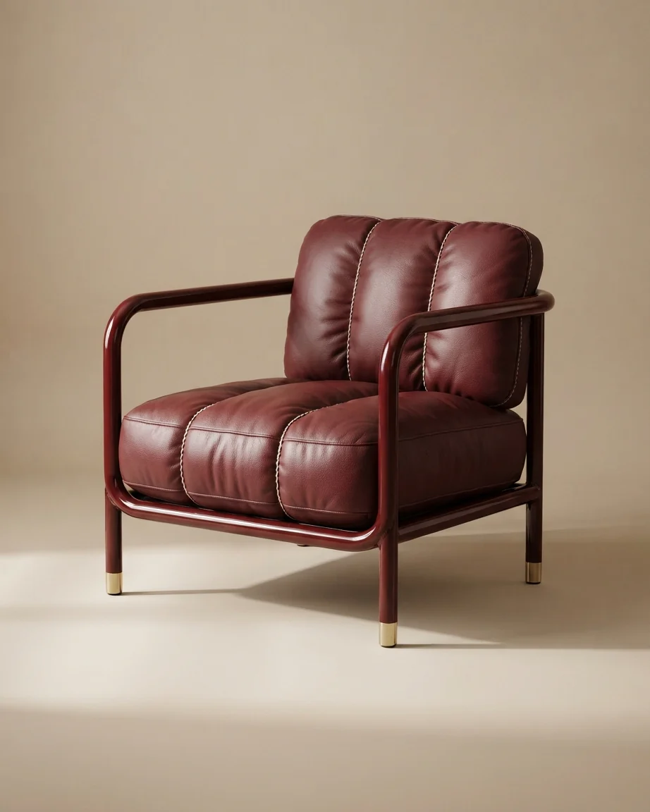
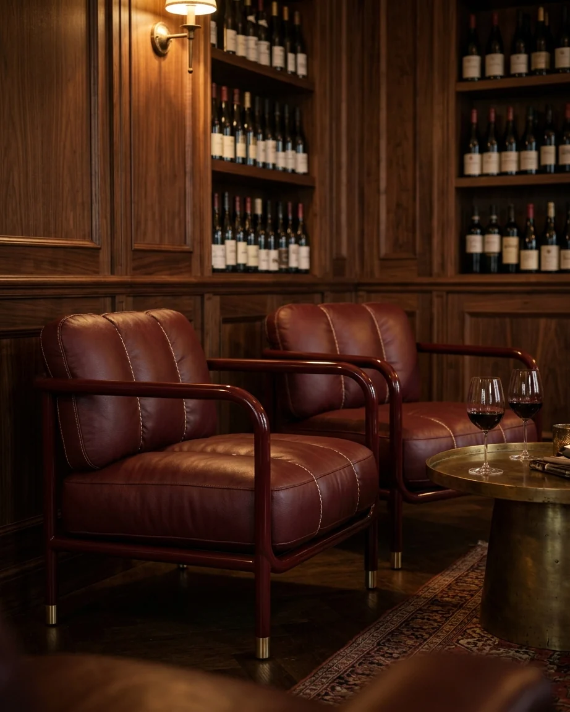

Серия Riserva · Винные и сигарные бутики
Cellar
Кресло для винного лаунжа ручной работы
Кресло для винного лаунжа: пухлые подушки с глубокой прострочкой зажаты в открытую стальную раму в глянцевом лаке, как в корсет. Ручная седельная строчка и латунные наконечники ножек.
Кожаот 35 000 ₽
Выбран цвет: Кожа цвета бычьей крови
- Каркас
- Металл
- Обивка
- Кожа цвета бычьей крови, Коньячная кожа, Тёмно-зелёная кожа. Возможен свой материал
- Ткани
- Коллекции Noble, Fiori, Bohemia, Rio
- Гарантия
- 12 месяцев, ГОСТ 16371-2014
- Производство
- Фабрика полного цикла ГК «Фабрикант»
- Доставка
- По России и СНГ
Изготавливаем под ваш проект: точные размеры, обивку и стоимость фиксируем в персональном расчёте.
